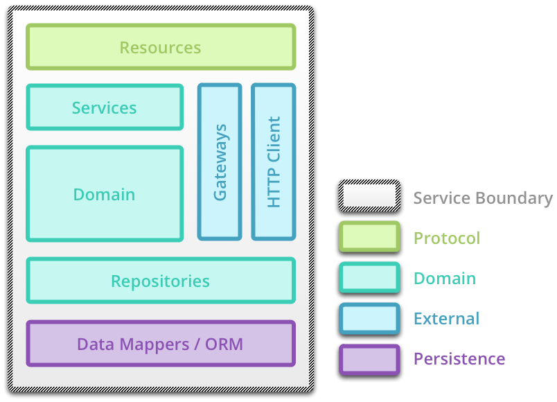
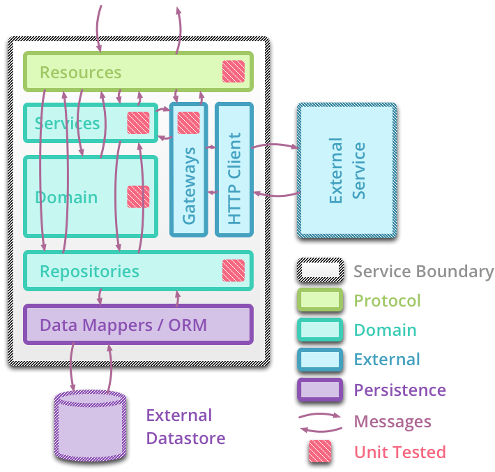
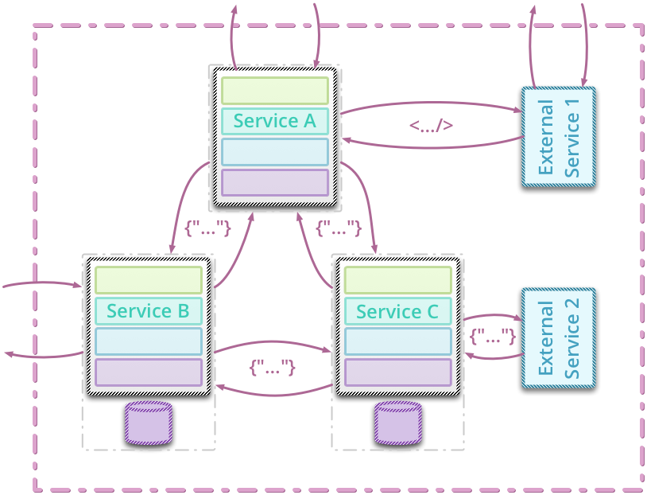

Testing Strategies in a Micro-Service Architecture
Toby Clemson
The Plan
- Micro-Services:
- Definition
- Anatomy
- Architecture
- Testing
- Unit
- Integration
- Component
- End to End
- Contracts
- Questions?
Definition of a Micro-Service
- Micro-service
-
A small web service supporting a specific task in a broader application work flow.
- Micro in size, usually less than 1000 lines of code.
- Single responsibility principle applied at the service level.
- Often RESTful, modelling concepts as resources and using hyperlinks to associate them.
- May or may not have a UI beyond the core API.
Anatomy of a Micro-Service: Components

Anatomy of a Micro-Service: Communications

Micro-Service Architecture

Micro-Service Testing: Unit Level
- Unit test
- A test of the smallest piece of testable software in the application, isolated from the remainder of the code, to determine whether it behaves as expected.
Micro-Service Testing: Unit Level
- Two styles of unit testing, mockist and classic.
- Classic: State based behaviour testing.
- Mockist: Interaction testing supported by mocks.
- What should be unit tested?
- Services are commonly a rich domain surrounded by plumbing and coordination code.
- Domain often lends itself to a classic style of testing.
- Plumbing and coordination logic usually easier to test using a mockist style.
- The more micro the services, the more plumbing and coordination logic overall.
- Does comprehensive unit testing pay off?
Micro-Service Testing: Unit Level

Micro-Service Testing: Progress...

Micro-Service Testing: Integration Level
- Integration test
- A test to verify the communication paths and interaction between components and to detect interface defects.
Micro-Service Testing: Integration Level
- Test the gap between our integration code and the external system to which we are integrating, e.g., other services, data stores or caches.
- Not necessarily comprehensive, cover basic success and error paths.
- Other mechanisms exist for verifying the external system's contract.
- Are they valuable?
- Provide fast feedback whilst iterating on integration modules.
- Have a dependency on a system not necessarily in our control.
Micro-Service Testing: Integration Level

Micro-Service Testing: Progress...

Micro-Service Testing: Component Level
- Component test
- A test that limits the scope of the exercised software to a portion of the system under test, by manipulating the system through internal code interfaces and by using test doubles to isolate the code under test from other components.
Micro-Service Testing: Component Level
- Treat each microservice as a component
- Lots of options!
- in-process vs. out of process
- internal stubbing vs. external stubbing
- real datastore vs. in-memory datastore
- Act as acceptance tests at the service level, testing the core business purpose of the service.
- Often care more about the contract of the service than other test suites.
Micro-Service Testing: Component Level: In Process

Aside: Internal Resources
- Whilst it might seem strange, internal resources prove very useful
- e.g., logs, feature flags, database commands, metrics, maintenance controls
- Can be locked down at the network level to avoid accidents in production, for example, by prefixing all with
/internal/...
- Often evolve to public resources during the lifetime of a code base.
Micro-Service Testing: Component Level: Out of Process

Micro-Service Testing: Progress...

Micro-Service Testing: End to End
- Functional test
- A test that verifies that a system meets external requirements and achieves its goals, testing the entire system, end to end.
Micro-Service Testing: End to End
- Exercise as much of the fully deployed system as possible.
- Often more business facing, utilising business readable DSLs.
- Tend to be more brittle or expensive than other levels of testing, in which case, should be few in number.
Micro-Service Testing: End to End

Micro-Service Testing: Contract Tests
- Contract tests
- A test at the boundary of an external service verifying that it meets the contract expected by a consuming service.
Me
Micro-Service Testing: Contract Tests
- Completely decoupled from consuming service.
- Assert against only those aspects of the external service required by the consuming service.
- Not component tests, only checking inputs and outputs at the service's interface.
- Ideally, packaged and runnable in the external service's pipeline.
Micro-Service Testing: Contract

Questions?